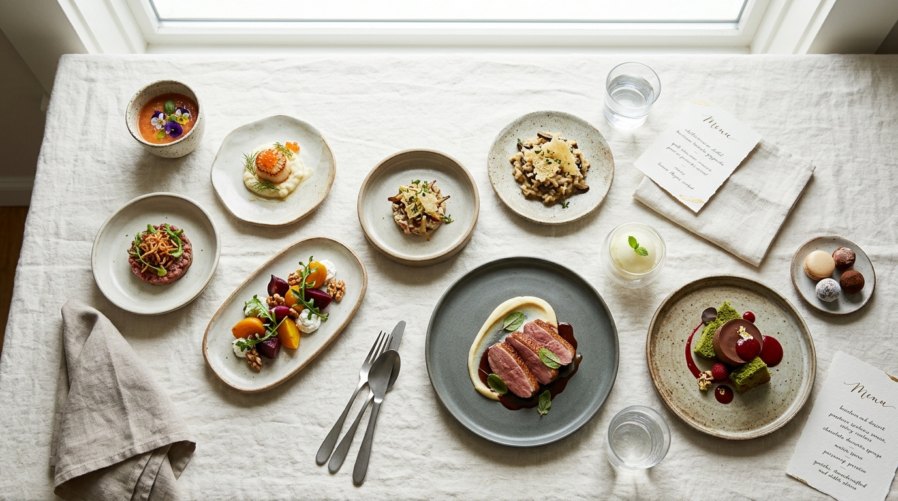

Grand Degustation Journey
十六幕の饗宴 · 16 MovementsThe definitive expression of Aurelia & Ash. 16 movements journeying through raw cold-water mollusks, binchotan fire-seared game, in-house koji broths, and forest sweets.
Sommelier Recommendation: Grand Cru Champagne & Vintage Junmai Daiginjo Flight (+¥22,000)